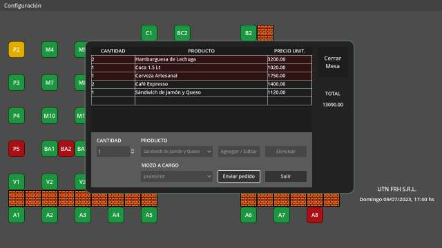
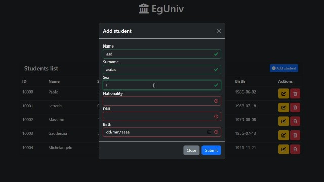

📝 Sobre mi
Soy Fabricio, un entusiasta desarrollador de software de Argentina con un enfoque Full-Stack y sólidas habilidades en HTML, CSS, JavaScript, Java, PHP y PL/SQL. Mi impulso por aprender me ha llevado a explorar más allá, adquiriendo y aplicando conocimientos en soporte técnico, privacidad y ciberseguridad, pruebas de software, automatización eficiente de tareas, configuración de servidores, etc.
Con más de 6 años de experiencia proporcionando soporte técnico a usuarios de todo el mundo en múltiples idiomas, he desarrollado una sólida habilidad para resolver problemas informáticos de manera efectiva. Durante mi trayectoria, he contribuido en la creación y configuración de servidores en videojuegos y entornos web, además de participar en proyectos al realizar pruebas de software y documentación en Inglés y Español.
Además, me recibí de Técnico Universitario en Programación en la Universidad Tecnológica Nacional, lo que ha fortalecido mi base de conocimientos y habilidades en el campo del desarrollo y administración de sistemas.
💼 Portafolio
SGG-Web
Un sitio web para la parte práctica del segundo parcial de Laboratorio de Computación IV
SGG-GDEng

Un Sistema de Gestión Gastronómico desarrollado como parte de la Practica Profesional Supervisada
LosEds

Un sitio web para la parte práctica del segundo parcial de Laboratorio de Computación III
CaC-EgUniv

El TP Final del curso Full-Stack Java de Codo a Codo